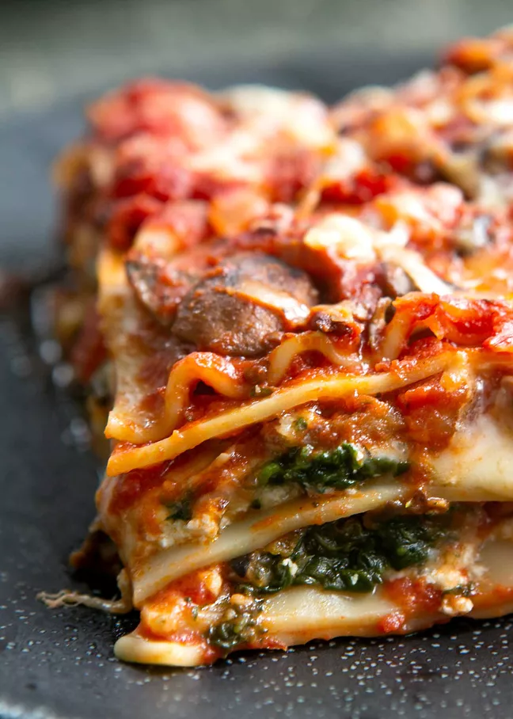
Prep Time: 30 mins
Cook Time: 105 minutes
Total Time: 2hrs 15mins
Servings: 8 to 10
Note: The first thing I do to start making this recipe is to get a big pot of salted water heating for the pasta and defrost the spinach. While this is happening you can prep the mushrooms and cheeses.
Use high quality tomato sauce for the best results.
If fresh basil is not available for layering in the casserole, add 2 teaspoons of dried basil to the sauce.
For the Sauce:
Place mushrooms in a large (6 to 8 quart) sauté pan on high or medium-high heat. Stir them with a wooden spoon or shake the pan from time to time. You may hear them squeak. Sprinkle salt over the mushrooms. The mushrooms will sizzle and then start to release water. (Note that you are not adding fat at this point to the pan; this method of cooking mushrooms in their own moisture is called "dry sautéing.) Once the mushrooms start to release water into the pan, stir in the chopped onions. Cook until the mushrooms are no longer releasing moisture and the mushroom water has boiled away, about 5 minutes more.
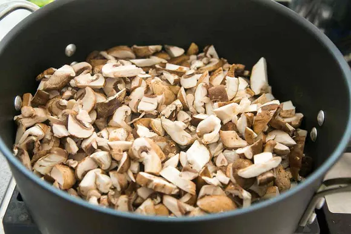
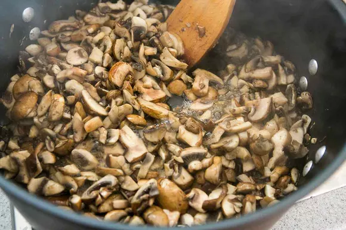
Add the olive oil to the mushrooms and stir to coat. Sauté the mushrooms and onions for about a minute. Add the garlic and cook for another minute. Stir in the tomato paste, cook for a minute longer. Reserve 1 cup of the tomato sauce (it will go in the bottom of the casserole dish), and put the remaining cup of tomato sauce into the pot with the mushrooms. Add the large can of crushed tomatoes and one cup of water. Stir in the thyme, sugar, and red pepper flakes. (If you are using dried basil instead of fresh, add it now.) Bring to a simmer, then lower the heat and simmer on a low simmer, for 20 minutes.
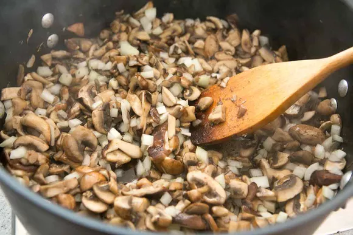
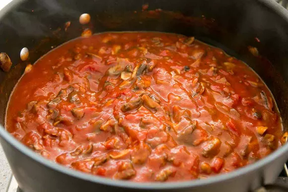
Preheat the oven to 350°F.
Spread the one cup of reserved tomato sauce over the bottom of a large (preferably 10- x 15-inch) casserole dish. (If your casserole dish is smaller, you may need to add another layer as you go through this step.
Once the sauce is simmering, salt the boiling pasta water, and add the dry lasagna noodles to the boiling water. (The water should be at a vigorous, rolling boil.) Stir gently, making sure that the noodles are not sticking to each other. Set the timer for 8 minutes, or however long is indicated on the package of the noodles. Cook uncovered on a high boil.
When the noodles are ready (al dente, cooked through but still firm to the bite), drain the noodles in a colander, and rinse them to cool them with cold water. As you rinse them, gently separate them with your fingers so they don't stick to each other.
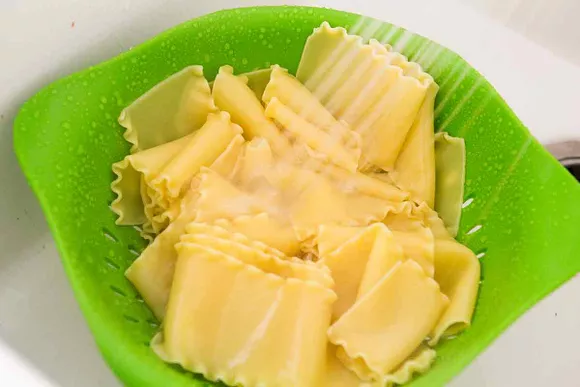
Prepare a couple large cookie sheets or baking sheets by spreading a tablespoon of olive oil over the baking sheets.
Place the lasagna noodles on the sheets, gently coating them with a bit of that olive oil, and spreading them out. This will help keep them from sticking to each other while you finish the sauce and prepare the layered casserole.
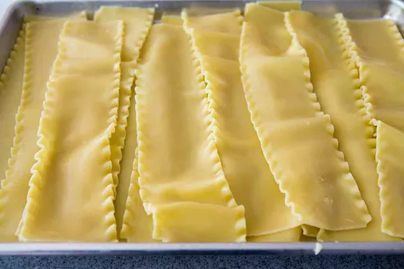
Turn off the heat on the stovetop for the sauce.
Place a layer of lasagna noodles down over the tomato sauce, slightly overlapping. (For our 10x15-inch dish, we ultimately fit 3 layers of 6 noodles each, with 2 extra noodles on which to nosh.)
Sprinkle half of the ricotta cheese over the noodles, and half of the defrosted, drained, and squeezed out spinach over the ricotta.
Sprinkle half of the mozzarella cheese over the spinach, and just a quarter of the pecorino cheese.
Then spoon 1/3 of your mushroom sauce over the mozzarella. Sprinkle half of the fresh basil over the sauce.
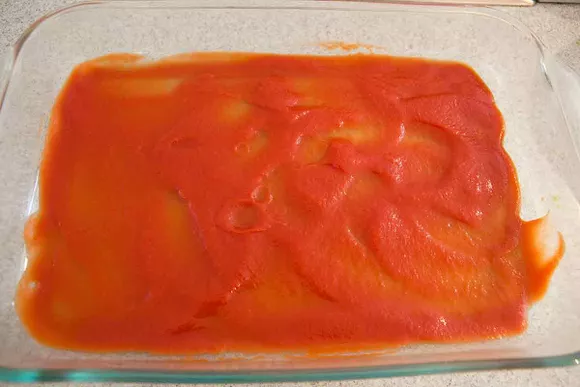
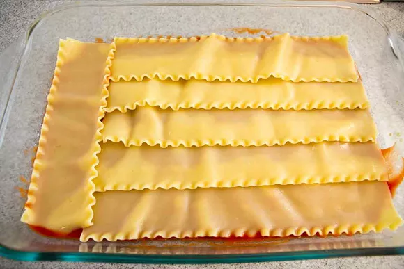
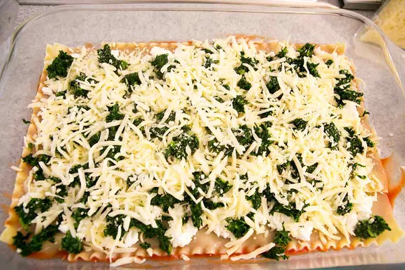
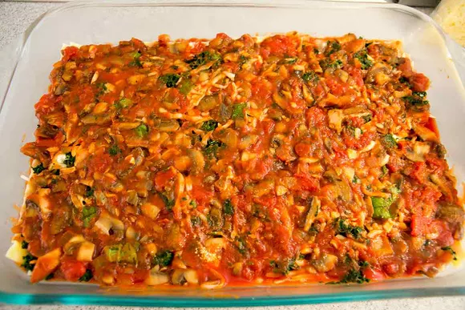
Repeat the layering process. Place a second layer of noodles over the sauce. Spread the remaining ricotta, spinach, and mozzarella over the noodles. Sprinkle another quarter of the pecorino along with the mozzarella. Top with another third of the mushroom sauce and the remaining fresh basil.
Layer your final layer of lasagna noodles over the sauce. Spread the remaining sauce over the lasagna noodles, and sprinkle with the remaining pecorino or parmesan cheese.
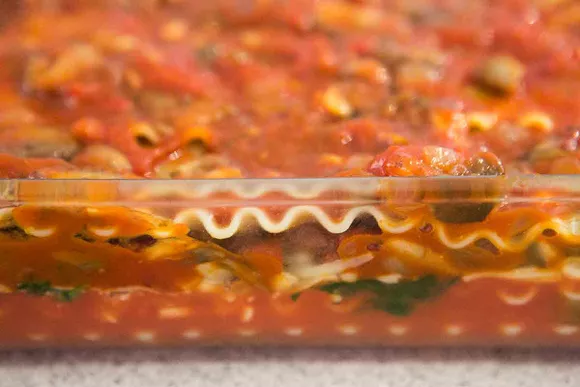
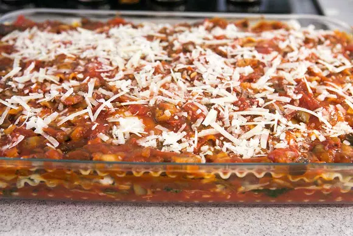
Pull out a sheet of aluminum foil large enough to cover the casserole dish. Spread a little olive oil over the inside of the piece of foil (the side that will have contact with the lasagna). Place the foil over the casserole dish and crimp the edges.
Bake at 350°F for 25 minutes, then remove the foil and bake uncovered for an additional 25 minutes.
Take the lasagna out of the oven when done and let it rest 10 minutes before cutting to serve. Once made, the lasagna will last a week in the fridge.